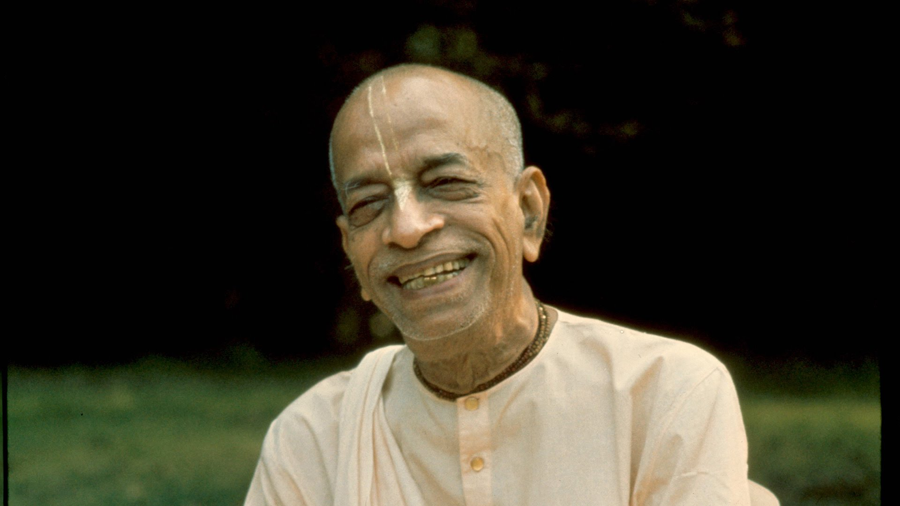

Srila Prabhupada was born Abhay Charan De on September 1, 1896, to a pious Hindu family in Calcutta. As a youth growing up in British-controlled India, Abhay became involved with Mahatma Gandhi’s civil disobedience movement to secure independence for his nation. It was, however, a 1922 meeting with a prominent scholar and religious leader, Srila Bhaktisiddhanta Sarasvati, which proved most influential on Abhay’s future calling. Srila Bhaktisiddhanta was a leader in the Gaudiya Vaishnava denomination, a monotheistic tradition within the broad Hindu culture, and asked Abhay to bring the teachings of Lord Krishna to the English-speaking world.
Abhay became a disciple of Srila Bhaktisiddhanta in 1933, and resolved to carry out his mentor’s request. Abhay, later known by the honorific A.C. Bhaktivedanta Swami Prabhupada, spent the next 32 years preparing for his journey to west. In 1965, at the age of sixty-nine, Srila Prabhupada travelled to New York City aboard a cargo ship. The journey was treacherous, and the elderly spiritual teacher suffered two heart attacks aboard ship. Arriving in the United States with just seven dollars in Indian rupees and his translations of sacred Sanskrit texts, Srila Prabhupada began to share the timeless wisdom of Krishna consciousness.
His message of peace and goodwill resonated with many young people, some of whom came forward to become serious students of the Krishna tradition. With the help of these students, Srila Prabhupada rented a small storefront on New York’s Lower East Side to use as a temple. On July 11, 1966, he officially registered his organization in the state of New York, formally founding the International Society for Krishna Consciousness. In the eleven years that followed, Srila Prabhupada circled the globe 14 times on lecture tours, bringing the teachings of Lord Krishna to thousands of people on six continents. Men and women from all backgrounds and walks of life came forward to accept his message, and with their help, Srila Prabhupadaestablished ISKCON centers and projects throughout the world. Under his inspiration, Krishna devotees established temples, rural communities, educational institutions, and started what would become the world’s largest vegetarian food relief program. With the desire to nourish the roots of Krishna consciousness in its home, Srila Prabhupada returned to India several times, where he sparked a revival in the Vaishnava tradition. In India, he opened dozens of temples, including large centers in the holy towns of Vrindavana and Mayapur. Srila Prabhupada’s most significant contributions, perhaps, are his books. He authored over 70 volumes on the Krishna tradition, which are highly respected by scholars for their authority, depth, fidelity to the tradition, and clarity. Several of his works are used as textbooks in numerous college courses. His writings have been translated into 76 languages. His most prominent works include: Bhagavad-gita As It Is, the 30-volume Srimad-Bhagavatam, and the 17-volume Sri Chaitanya-charitamrita.

Srila Prabhupada Chronology
- 1954 Left family, vanaprastha
- 1956 Vrindavan residence, Vamsi Gopal temple
- 1959 Begins translating Srimad Bhagavatam in Delhi July Moves upstairs Radha-Damodara temple Sept. 17, Takes sannyasa, renounced order of life
- 1960 Fall Publishes first book, paperback Easy Journey to Other Planets
- 1962 July Moves into downstairs rooms at Radha-Damodara
- Sept. Publishes Volume one, Srimad Bhagavatam in Delhi
- 1963 December Publishes volume two Srimad Bhagavatam
- 1964 December Publishes volume three Srimad Bhagavatam
- 1965 August 13, Leaves Calcutta on Jaladuta bound for America
- 1967 Returns to Radha-Damodara
- 1971 Visits Radha-Damodara and Vrindavan with forty disciples
- 1972 Kartik at Radha-Damodara, delivers famous Nectar of Devotion lectures
- 1977 Enters the eternal lila of Radha and Krishna in Goloka Vrindavan